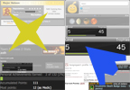
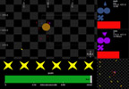

home
 The Interface Ecology Lab investigates the future of human expression, focusing on creativity, play, participation, and learning.
We develop interdisciplinary research and education from our home in the
Texas A&M Department of Computer Science and Engineering.
The lab is directed by PI Andruid Kerne.
The Interface Ecology Lab investigates the future of human expression, focusing on creativity, play, participation, and learning.
We develop interdisciplinary research and education from our home in the
Texas A&M Department of Computer Science and Engineering.
The lab is directed by PI Andruid Kerne.
news
| 9/2015 - 2018 | Interface Ecology Lab awarded NSF IIS grant, Transforming Participation in Online Courses through Social Live Media Composition. |
| 7/2015 - 2017 | Interface Ecology Lab awarded Microsoft Research grant for Collaborative Pen+Touch Design Ideation on Large Surfaces. We receive 4K 84" and 1080p 55" pen+touch interactive surface(s) and funding. |
| 9/2015 - 2016 | Interface Ecology Lab Ph.D. candidate Andrew Webb is TAMU Dissertation Fellow. |
projects
IdeaMâché is
a browser-based expressive web curation system that uses
information composition as the medium of curation.
Curation is the process of assembling information in meaningful exhibits, for people to think about.
IdeaMâché allows users to
collect, arrange, annotate and synthesize digital content to express relationships and develop ideas.
 TweetBubble
is a chrome extension that helps Twitter users follow associational chains of
tweets through #hashtags and @users. People can experience and relate a variety
of content in-context helping them develop multiple perspectives on a topic.
TweetBubble makes browsing a more fun and fluid experience.
TweetBubble
is a chrome extension that helps Twitter users follow associational chains of
tweets through #hashtags and @users. People can experience and relate a variety
of content in-context helping them develop multiple perspectives on a topic.
TweetBubble makes browsing a more fun and fluid experience.
TweetBubble uses BigSemantics and Metadata In-Context Expander.
publications + exhibits
 Webb, A.M., Kerne, A., Linder, R., Lupfer, N, Qu, Y., Keith, K., Carrasco, M., Chen, Y.,
A Free-form Medium for Curating the Digital,
in Curating the Digital Space for Art and Interaction, England, D., Schiphorst, T., Bryan-Kinns, N. (Eds.), Springer, 2016, in press.
Webb, A.M., Kerne, A., Linder, R., Lupfer, N, Qu, Y., Keith, K., Carrasco, M., Chen, Y.,
A Free-form Medium for Curating the Digital,
in Curating the Digital Space for Art and Interaction, England, D., Schiphorst, T., Bryan-Kinns, N. (Eds.), Springer, 2016, in press.
Webb, A.M., Wang, C., Kerne, A., Cesar, P.,
Distributed Liveness: Understanding How New Technologies Transform Performance Experiences,
Proc. ACM Conference on Computer-Supported Cooperative Work 2016, San Francisco, CA, in press.
Jain, A., Lupfer, N., Qu, Y., Linder, R., Kerne, A., Smith, S. M.,
Evaluating TweetBubble with Ideation Metrics of Exploratory Browsing,
Proc. ACM Creativity and Cognition 2015, 178-187 [28%].
Best Paper Honorable Mention.
http://dx.doi.org/10.1145/2757226.2757239
[video]
 Linder, R., Lupfer, N., Kerne, A., Webb, A. M., Hill, C., Qu, Y., Keith, K., Carrasco M., Kellogg, E.
Beyond Slideware: How a Free-form Presentation Medium Stimulates Free-form Thinking in the Classroom,
Proc. ACM Creativity and Cognition 2015, 285-294. [28%].
Linder, R., Lupfer, N., Kerne, A., Webb, A. M., Hill, C., Qu, Y., Keith, K., Carrasco M., Kellogg, E.
Beyond Slideware: How a Free-form Presentation Medium Stimulates Free-form Thinking in the Classroom,
Proc. ACM Creativity and Cognition 2015, 285-294. [28%].
 Webb, A.M.,
Pen + Touch Diagramming to Stimulate Design Ideation,
Proc. ACM Creativity and Cognition 2015, Graduate Symposium, 331-332.
http://dx.doi.org/10.1145/2757226.2764766
Webb, A.M.,
Pen + Touch Diagramming to Stimulate Design Ideation,
Proc. ACM Creativity and Cognition 2015, Graduate Symposium, 331-332.
http://dx.doi.org/10.1145/2757226.2764766
 Wilkins, J., Järvi, J., Jain, A., Kejriwal, G., Kerne, A., Kumar, V.,
EvolutionWorks: Towards Improved Visualization of Citation Networks,
Proc. IFIP International Conference on Computer-Human Interaction (INTERACT) 2015. [29.9%].
Wilkins, J., Järvi, J., Jain, A., Kejriwal, G., Kerne, A., Kumar, V.,
EvolutionWorks: Towards Improved Visualization of Citation Networks,
Proc. IFIP International Conference on Computer-Human Interaction (INTERACT) 2015. [29.9%].
 Lupfer, N., Hamiliton, W. Webb, A., Linder, R., Edmonds, E., and Kerne, A.,
The Art.CHI Gallery: An Embodied Iterative Curation Experience,
Interactivity Exhibit,
Proc CHI 2015 EA.
http://dx.doi.org/10.1145/2702613.2725457
Lupfer, N., Hamiliton, W. Webb, A., Linder, R., Edmonds, E., and Kerne, A.,
The Art.CHI Gallery: An Embodied Iterative Curation Experience,
Interactivity Exhibit,
Proc CHI 2015 EA.
http://dx.doi.org/10.1145/2702613.2725457
 R., Linder, and Koh, E.,
Quarry: Picking From Examples to Explore Big Data,
Proc CHI 2015 EA.
http://dx.doi.org/10.1145/2702613.2732933
R., Linder, and Koh, E.,
Quarry: Picking From Examples to Explore Big Data,
Proc CHI 2015 EA.
http://dx.doi.org/10.1145/2702613.2732933
 Toups, Z., Hammer, J., Hamilton, W., Jarrah, A., Graves, W., and Garretson, O.
A Framework for Cooperative Communication Game Mechanics from Grounded Theory,
Proc CHI PLAY 2014,
DOI:10.1145/2658537.2658681
Toups, Z., Hammer, J., Hamilton, W., Jarrah, A., Graves, W., and Garretson, O.
A Framework for Cooperative Communication Game Mechanics from Grounded Theory,
Proc CHI PLAY 2014,
DOI:10.1145/2658537.2658681
 Kerne, A., Webb, A.M., Smith, S.M., Linder, R., Lupfer, N., Qu, Y., Moeller, J., Damaraju, S.,
Using Metrics of Curation to Evaluate Information-based Ideation,
ACM Transactions on Computer-Human Interaction (ToCHI),
21(3), June 2014, 48 pages.
http://dx.doi.org/10.1145/2591677
reader's guide
Kerne, A., Webb, A.M., Smith, S.M., Linder, R., Lupfer, N., Qu, Y., Moeller, J., Damaraju, S.,
Using Metrics of Curation to Evaluate Information-based Ideation,
ACM Transactions on Computer-Human Interaction (ToCHI),
21(3), June 2014, 48 pages.
http://dx.doi.org/10.1145/2591677
reader's guide
 Qu, Y., Kerne, A., Lupfer, N., Linder, R., Jain, A.,
Metadata Type System: Integrate Presentation, Data Models and Extraction to Enable Exploratory Browsing Interfaces,
Proc. ACM Engineering Interactive Computing Systems (EICS) 2014, 107-116 [18%].
http://dx.doi.org/10.1145/2607023.2607030
[video]
Qu, Y., Kerne, A., Lupfer, N., Linder, R., Jain, A.,
Metadata Type System: Integrate Presentation, Data Models and Extraction to Enable Exploratory Browsing Interfaces,
Proc. ACM Engineering Interactive Computing Systems (EICS) 2014, 107-116 [18%].
http://dx.doi.org/10.1145/2607023.2607030
[video]
 Hamilton, W., Garretson, O., and Kerne, A.
Streaming on Twitch: Fostering Participatory Communities of Play within Live Mixed Media,
Proc. CHI 2014, 1315-1324 [23%].
http://dx.doi.org/10.1145/2556288.2557048
[video]
Hamilton, W., Garretson, O., and Kerne, A.
Streaming on Twitch: Fostering Participatory Communities of Play within Live Mixed Media,
Proc. CHI 2014, 1315-1324 [23%].
http://dx.doi.org/10.1145/2556288.2557048
[video]
 Linder, R., Snodgrass, C., and Kerne, A.
Everyday Ideation: All of My Ideas Are On Pinterest,
Proc. CHI 2014, 2411-2420 [23%].
http://dx.doi.org/10.1145/2556288.2557273
Linder, R., Snodgrass, C., and Kerne, A.
Everyday Ideation: All of My Ideas Are On Pinterest,
Proc. CHI 2014, 2411-2420 [23%].
http://dx.doi.org/10.1145/2556288.2557273
 Webb, A.M. and Kerne, A.,
Embodying Diagramming through Pen + Touch Gestures,
CHI 2014 Workshop: Gesture Interaction Design: Communication and
Cognition, Toronto, Canada.
Webb, A.M. and Kerne, A.,
Embodying Diagramming through Pen + Touch Gestures,
CHI 2014 Workshop: Gesture Interaction Design: Communication and
Cognition, Toronto, Canada.
 Webb, A.M., Kerne, A., Linder, R., Lupfer, N., Qu, Y., Keith, K., Carrasco, M.,
Multi-Scale Information Composition: a New Medium for Freeform Art Curation in the Cloud,
CHI 2014 Workshop: Curating the Digital: Spaces for Art and Interaction, Toronto, Canada.
[information composition]
Webb, A.M., Kerne, A., Linder, R., Lupfer, N., Qu, Y., Keith, K., Carrasco, M.,
Multi-Scale Information Composition: a New Medium for Freeform Art Curation in the Cloud,
CHI 2014 Workshop: Curating the Digital: Spaces for Art and Interaction, Toronto, Canada.
[information composition]
Fischer, J.E., Jiang, W., Kerne, A., Greenhalgh, C., Ramchurn, S.D., Reece,S., Pantidi, N., Rodden, T.,
Supporting Team Coordination on the Ground: Requirements from a Mixed-Reality Game,
Proc. Design of Cooperative Systems (COOP) 2014, 49-67 [42%].
http://dx.doi.org/10.1007/978-3-319-06498-7_4
 Webb, A.M., Linder, R., Kerne, A., Lupfer, N., Qu, Y., Poffenberger, B., and Revia, C.,
Promoting Reflection and Interpretation in Education: Curating Rich Bookmarks as Information Composition,
Proc. Creativity and Cognition 2013, 53-62 [32%].
http://dx.doi.org/10.1145/2466627.2466636
Webb, A.M., Linder, R., Kerne, A., Lupfer, N., Qu, Y., Poffenberger, B., and Revia, C.,
Promoting Reflection and Interpretation in Education: Curating Rich Bookmarks as Information Composition,
Proc. Creativity and Cognition 2013, 53-62 [32%].
http://dx.doi.org/10.1145/2466627.2466636
 Kerne, A., Latulipe, C., Drucker, S.M., Candy, L., Höök, K., Webb, A.M., and Carroll, E.
Evaluation methods for creativity support environments,
Proc CHI 2013 Extended Abstracts, 3295-3298.
http://dx.doi.org/10.1145/2468356.2479670
Kerne, A., Latulipe, C., Drucker, S.M., Candy, L., Höök, K., Webb, A.M., and Carroll, E.
Evaluation methods for creativity support environments,
Proc CHI 2013 Extended Abstracts, 3295-3298.
http://dx.doi.org/10.1145/2468356.2479670
Linder, R., Webb, A.M., and Kerne, A.,
Searching to Measure the Novelty of Collected Ideas,
CHI 2013 Evaluation Methods for Creativity Support Environments Workshop, Paris, France.
Damaraju, S., Seo, J.H., Hammond, T., Kerne, A.,
Multi-tap sliders: advancing touch interaction for parameter adjustment,
Proc IUI 2013, 445-452 [22%].
http://dx.doi.org/10.1145/2468356.2479670
Hamilton, W., Kerne, A., and Robbins, T.,
High-Performance Pen + Touch Modality Interactions: A Real-Time Strategy Game eSports Context,
Proc. UIST 2012, 309-318 [21%].
http://dx.doi.org/10.1145/2380116.2380156
[video]
 Kerne, A., Hamilton, W., Toups, Z.,
Culturally Based Design: Embodying Trans-Surface Interaction in Rummy,
Proc CSCW 2012, 509-518 [top 9%].
http://dx.doi.org/10.1145/2145204.2145284
Kerne, A., Hamilton, W., Toups, Z.,
Culturally Based Design: Embodying Trans-Surface Interaction in Rummy,
Proc CSCW 2012, 509-518 [top 9%].
http://dx.doi.org/10.1145/2145204.2145284
Hamilton, W., Kerne, A., and Moeller, J.
Pen-in-Hand Command: NUI for Real-Time Strategy eSports,
Proc CHI EA 2012 (Video Showcase), 1455.
http://dx.doi.org/10.1145/2212776.2212483
[video]
 Webb, A.M. and Kerne, A.,
Creative Visual Thinking through Information Composition + Diagramming,
CHI 2012 Visual Thinking & Digital Imagery Workshop, Austin, TX.
Webb, A.M. and Kerne, A.,
Creative Visual Thinking through Information Composition + Diagramming,
CHI 2012 Visual Thinking & Digital Imagery Workshop, Austin, TX.
 Toups, Z. O., Kerne, A., Hamilton, W. A.
The Team Coordination Game: A zero-fidelity simulation abstracted from fire emergency response work practice,
ACM Transactions on Computer-Human Interaction (ToCHI), 18(4), December 2011, 37 pages.
http://dx.doi.org/10.1145/2063231.2063237
Toups, Z. O., Kerne, A., Hamilton, W. A.
The Team Coordination Game: A zero-fidelity simulation abstracted from fire emergency response work practice,
ACM Transactions on Computer-Human Interaction (ToCHI), 18(4), December 2011, 37 pages.
http://dx.doi.org/10.1145/2063231.2063237
 Toups, Z.O., Kerne, A., Hamilton, W. A., Shahzad, N.
Zero-Fidelity Simulation of Fire Emergency Response: Improving Team Coordination Learning,
Proc CHI 2011, 1959–1968 [26%].
http://dx.doi.org/10.1145/1978942.1979226
[video]
Toups, Z.O., Kerne, A., Hamilton, W. A., Shahzad, N.
Zero-Fidelity Simulation of Fire Emergency Response: Improving Team Coordination Learning,
Proc CHI 2011, 1959–1968 [26%].
http://dx.doi.org/10.1145/1978942.1979226
[video]
 Webb, A.M., Kerne, A.
Integrating Implicit Structure Visualization with Authoring Promotes Ideation,
Proc Joint ACM/IEEE Conf on Digital Libraries (JCDL) 2011, 203-212 [23%].
http://dx.doi.org/10.1145/1998076.1998116
[video]
Webb, A.M., Kerne, A.
Integrating Implicit Structure Visualization with Authoring Promotes Ideation,
Proc Joint ACM/IEEE Conf on Digital Libraries (JCDL) 2011, 203-212 [23%].
http://dx.doi.org/10.1145/1998076.1998116
[video]
Smith, S.M., Linsey, J.S., Kerne, A.
Using Evolved Analogies to Overcome Creative Design Fixation,
Proc Design Creativity 2010, 35-39 [33%].
http://dx.doi.org/10.1007/978-0-85729-224-7_6
Damaraju, S., Kerne, A.,
Comparing Multi-Touch Interaction Techniques for Manipulation of an Abstract Parameter Space,
Proc. International Conference on Multimodal Interaction (ICMI) 2011, 221-224 [39%].
http://dx.doi.org/10.1145/2070481.2070520
 Qu, Y., Kerne, A., Webb, A.M., Herstein, A.
Interoperable Metadata Semantics with Meta-Metadata: A Use Case Integrating Search Engines. Proc ACM DocEng 2011, 171-174 [53%].
http://dx.doi.org/10.1145/2034691.2034729
Qu, Y., Kerne, A., Webb, A.M., Herstein, A.
Interoperable Metadata Semantics with Meta-Metadata: A Use Case Integrating Search Engines. Proc ACM DocEng 2011, 171-174 [53%].
http://dx.doi.org/10.1145/2034691.2034729
 Moeller, J., Lupfer, N., Hamilton, B., Lin, H., Kerne, A.,
intangibleCanvas: Free-Air Finger Painting on a Projected Canvas ,
Proc CHI 2011 EA, 1165-1170 [46%].
http://dx.doi.org/10.1145/1979742.1979817
Moeller, J., Lupfer, N., Hamilton, B., Lin, H., Kerne, A.,
intangibleCanvas: Free-Air Finger Painting on a Projected Canvas ,
Proc CHI 2011 EA, 1165-1170 [46%].
http://dx.doi.org/10.1145/1979742.1979817
Moeller, J. and Kerne, A.,
ZeroTouch: A Zero-Thickness Optical Multi-Touch Force Field, Interactivity Exhibit,
Proc CHI 2011 EA, 1165-1170 [46%].
http://dx.doi.org/10.1145/1979742.1979710
[video]
 Kerne, A., Qu, Y., Webb, A.M., Damaraju, S., Lupfer, N., Mathur, A.
Meta-Metadata: A Metadata Semantics Language for Collection Representation Applications,
Proc ACM Conference on Information and Knowledge Management (CIKM) 2010,
1129-1138 [12.7%].
http://dx.doi.org/10.1145/1871437.1871580
Kerne, A., Qu, Y., Webb, A.M., Damaraju, S., Lupfer, N., Mathur, A.
Meta-Metadata: A Metadata Semantics Language for Collection Representation Applications,
Proc ACM Conference on Information and Knowledge Management (CIKM) 2010,
1129-1138 [12.7%].
http://dx.doi.org/10.1145/1871437.1871580
 Koh, E., Kerne, A., Berry, S.,
Test Collection Management and Labeling System,
Proc ACM DocEng 2009, 39-42 [29.6%].
http://dx.doi.org/10.1145/1600193.1600203
Koh, E., Kerne, A., Berry, S.,
Test Collection Management and Labeling System,
Proc ACM DocEng 2009, 39-42 [29.6%].
http://dx.doi.org/10.1145/1600193.1600203
 Toups, Z. O., Kerne, A., Hamilton, W.
Game Design Principles for Engaging Cooperative Play: Core Mechanics and Interfaces for Non-Mimetic Simulation of Fire Emergency Response,
Proc ACM SIGGRAPH Symposium on Games 2009, 71-78 [30%]
http://dx.doi.org/10.1145/1581073.1581085
Toups, Z. O., Kerne, A., Hamilton, W.
Game Design Principles for Engaging Cooperative Play: Core Mechanics and Interfaces for Non-Mimetic Simulation of Fire Emergency Response,
Proc ACM SIGGRAPH Symposium on Games 2009, 71-78 [30%]
http://dx.doi.org/10.1145/1581073.1581085
 Hamilton, W., Toups, Z. O., Kerne, A.
Synchronized Communication and Coordinated Views: Qualitative Data Discovery for Team Game User Studies,
Proc CHI Extended 2009,
DOI:10.1145/1520340.1520702
Hamilton, W., Toups, Z. O., Kerne, A.
Synchronized Communication and Coordinated Views: Qualitative Data Discovery for Team Game User Studies,
Proc CHI Extended 2009,
DOI:10.1145/1520340.1520702

Toups, Z. O., Kerne, A., Hamilton, W.
Motivating Play through Score,
ACM CHI 2009 Workshop on Engagement by Design.
Kerne, A., Koh, E., Smith, S. M., Webb, A., Dworaczyk, B.,
combinFormation: Mixed-Initiative Composition of Image and Text Surrogates Promotes Information Discovery
,
ACM Transactions on Information Systems (TOIS), 27(1), Dec. 2008, 5:1-45.
http://dx.doi.org/10.1145/1416950.1416955
 Kerne, A., Damaraju, S., Kumar, B., and Webb, A.
Meta-Metadata: A Semantic Architecture for Multimedia Metadata Definition, Extraction, and Presentation,
Poster and Demo Proc International Conf on Semantic and Digital Media Technologies (SAMT) 2008.
Kerne, A., Damaraju, S., Kumar, B., and Webb, A.
Meta-Metadata: A Semantic Architecture for Multimedia Metadata Definition, Extraction, and Presentation,
Poster and Demo Proc International Conf on Semantic and Digital Media Technologies (SAMT) 2008.
 Damaraju, S., Kerne, A.
Multitouch Gesture Learning and Recognition System,
Extended Abstracts of IEEE Workshop on Tabletops and Interactive Surfaces 2008.
Damaraju, S., Kerne, A.
Multitouch Gesture Learning and Recognition System,
Extended Abstracts of IEEE Workshop on Tabletops and Interactive Surfaces 2008.
 Kerne, A., Toups, Z.O., Dworaczyk, B., Khandelwal, M.
A Concise XML Binding Framework Facilitates Practical Object-Oriented Document Engineering
,
Proc ACM Symposium on Document Engineering (DocEng) 2008, 62-65 [43%].
http://dx.doi.org/10.1145/1410140.1410152
Kerne, A., Toups, Z.O., Dworaczyk, B., Khandelwal, M.
A Concise XML Binding Framework Facilitates Practical Object-Oriented Document Engineering
,
Proc ACM Symposium on Document Engineering (DocEng) 2008, 62-65 [43%].
http://dx.doi.org/10.1145/1410140.1410152
 Kerne, A., Smith, S.M., Koh, E., Choi, H., Graeber, R.,
An Experimental Method for Measuring the Emergence of New Ideas in Information Discovery,
International Journal of Human-Computer Interaction (IJHCI),
24 (5) July 2008, 460-477.
http://dx.doi.org/10.1080/10447310802142243
Kerne, A., Smith, S.M., Koh, E., Choi, H., Graeber, R.,
An Experimental Method for Measuring the Emergence of New Ideas in Information Discovery,
International Journal of Human-Computer Interaction (IJHCI),
24 (5) July 2008, 460-477.
http://dx.doi.org/10.1080/10447310802142243
 Webb, A., Kerne, A.
The In-Context Slider: A Fluid Interface Component for Visualization and Adjustment of Values while Authoring,
Proc ACM Advanced Visual Interfaces (AVI) 2008, 91-99, [27.5%].
http://dx.doi.org/10.1145/1385569.1385586
Webb, A., Kerne, A.
The In-Context Slider: A Fluid Interface Component for Visualization and Adjustment of Values while Authoring,
Proc ACM Advanced Visual Interfaces (AVI) 2008, 91-99, [27.5%].
http://dx.doi.org/10.1145/1385569.1385586
 Toups, Z. O., Kerne, A.,
Implicit Coordination in Firefighting Practice: Design Implications for Teaching Fire Emergency Responders,
Proc CHI 2007, 277-286 [25%].
http://dx.doi.org/10.1145/1240624.1240734
Toups, Z. O., Kerne, A.,
Implicit Coordination in Firefighting Practice: Design Implications for Teaching Fire Emergency Responders,
Proc CHI 2007, 277-286 [25%].
http://dx.doi.org/10.1145/1240624.1240734
 Kerne, A., Koh, E.,
Representing Collections as Compositions to Support Distributed Creative Cognition and Situated Creative Learning,
New Review of Hypermedia and Multimedia (NRHM),
13(2) Dec 2007, 135-162.
http://dx.doi.org/110.1080/13614560701711859
Kerne, A., Koh, E.,
Representing Collections as Compositions to Support Distributed Creative Cognition and Situated Creative Learning,
New Review of Hypermedia and Multimedia (NRHM),
13(2) Dec 2007, 135-162.
http://dx.doi.org/110.1080/13614560701711859
 Webb, A.,
A Transitory Interface Component for the In-Context Visualization and Adjustment of a Value
,
M.S. thesis, Texas A&M University, August 2007.
Webb, A.,
A Transitory Interface Component for the In-Context Visualization and Adjustment of a Value
,
M.S. thesis, Texas A&M University, August 2007.
Koh, E., Kerne, A., Hill, R.,
Creativity Support: Information Discovery and Exploratory Search,
Proc SIGIR 2007, 895-896.
http://dx.doi.org/110.1145/1277741.1277963
Kerne, A., Koh, E.,
Creativity support: the mixed-initiative composition space,
Proc Joint ACM/IEEE Conf. on Digital Libraries (JCDL), 509-509.
 Toups, Z. O., Kerne, A.,
Location-Aware Augmented Reality Gaming for Emergency Response Education: Concepts and Development,
CHI 2007 Workshop on Mobile Spatial Interaction, San Jose, California.
Toups, Z. O., Kerne, A.,
Location-Aware Augmented Reality Gaming for Emergency Response Education: Concepts and Development,
CHI 2007 Workshop on Mobile Spatial Interaction, San Jose, California.
 Kerne, A., Koh, E., Dworaczyk, B., Mistrot, J.M., Choi, H.,
Smith, S., Graeber, R., Caruso, D., Webb, A., Hill, R., Albea, J.,
combinFormation: A
Mixed-Initiative System for Representing Collections as Compositions of
Image and Text Surrogates,
Kerne, A., Koh, E., Dworaczyk, B., Mistrot, J.M., Choi, H.,
Smith, S., Graeber, R., Caruso, D., Webb, A., Hill, R., Albea, J.,
combinFormation: A
Mixed-Initiative System for Representing Collections as Compositions of
Image and Text Surrogates,Proc Joint ACM/IEEE Conf. on Digital Libraries (JCDL) 2006, 11-20 [23%]. http://dx.doi.org/110.1145/1141753.1141756
 Webb, A., Kerne, A., Koh, E., Joshi, P., Park, Y., Graeber, R.,
Choreographic Buttons: Promoting Social Interaction through Human
Movement and Clear Affordances, Proc ACM Multimedia 2006, 451-460 [16%].
http://dx.doi.org/10.1145/1180639.1180731
Webb, A., Kerne, A., Koh, E., Joshi, P., Park, Y., Graeber, R.,
Choreographic Buttons: Promoting Social Interaction through Human
Movement and Clear Affordances, Proc ACM Multimedia 2006, 451-460 [16%].
http://dx.doi.org/10.1145/1180639.1180731
 Graeber, R., Kerne, A., Henderson, K.,
ZooMICSS:
a zoomable map image collection sensemaking system (the Katrina Rita context),
Proc ACM Multimedia 2006, 795-796 [37%].
http://dx.doi.org/110.1145/1180639.1180813
Graeber, R., Kerne, A., Henderson, K.,
ZooMICSS:
a zoomable map image collection sensemaking system (the Katrina Rita context),
Proc ACM Multimedia 2006, 795-796 [37%].
http://dx.doi.org/110.1145/1180639.1180813

Toups, Z. O., Graeber, R., Kerne, A., Tassinary, L., Berry, S., Overby, K., Johnson, M.,
A
Design for Using Physiological Signals to Affect Team Game Play, Proc
Augmented Cognition International 2006.
Koh, E., Kerne, A.,
I Keep Collecting: College Students Build and Utilize Collections in Spite of Breakdowns, Proc European Conf
on Digital Libraries (ECDL) 2006, 303-314 [27%].
http://dx.doi.org/10.1007/11863878_26
 Kerne, A., Koh, E., Choi, H., Dworaczyk, B., Smith, S.M., Hill, R., Albea, J.,
Supporting
Creative Learning Experience with Compositions of Image and Text Surrogates, Proc Ed Media 2006.
Kerne, A., Koh, E., Choi, H., Dworaczyk, B., Smith, S.M., Hill, R., Albea, J.,
Supporting
Creative Learning Experience with Compositions of Image and Text Surrogates, Proc Ed Media 2006.
 Alley, E., Cooper, T., Graeber, R., Kerne, A., Overby, K., Toups, Z.,
Censor Chair: Exploring Censorship and Social Presence through
Psychophysiological Sensing,
Proc ACM Multimedia 2005, 922-929 [16%].
http://dx.doi.org/10.1145/1101149.1101345
Alley, E., Cooper, T., Graeber, R., Kerne, A., Overby, K., Toups, Z.,
Censor Chair: Exploring Censorship and Social Presence through
Psychophysiological Sensing,
Proc ACM Multimedia 2005, 922-929 [16%].
http://dx.doi.org/10.1145/1101149.1101345
 Stenner, J., Kerne, A., Williams, Y., Playas: Homeland Mirage,
ISEA/Zero One, Aug 2006, San Jose.
Stenner, J., Kerne, A., Williams, Y., Playas: Homeland Mirage,
ISEA/Zero One, Aug 2006, San Jose.
Stenner, J., Kerne, A., Williams, Y.,
Playas: Homeland Mirage,
Proc ACM Multimedia 2005, 1057-1058 [28%].
http://dx.doi.org/10.1145/1101149.1101375
 Kerne, A.,
doing
interface ecology: the practice of metadisciplinarity, Proc
SIGGRAPH Art and Animation, 181-185 [20%].
http://dx.doi.org/10.1145/1086057.1086144
Kerne, A.,
doing
interface ecology: the practice of metadisciplinarity, Proc
SIGGRAPH Art and Animation, 181-185 [20%].
http://dx.doi.org/10.1145/1086057.1086144
Kerne, A., Koh, E., Sundaram, V., Mistrot, J.M.,
Generative
semantic clustering in spatial hypertext, Proc ACM Document Engineering (DocEng) 2005, 84-93 [30%].
http://dx.doi.org/10.1145/1096601.1096624
 Kerne, A., Smith, S.M., Choi, H., Graeber, R., Caruso, D.,
Evaluating
Navigational Surrogate Formats with Divergent Browsing Tasks, Proc CHI 2005 Extended, 1537-1540.
http://dx.doi.org/10.1145/1056808.1056960
Kerne, A., Smith, S.M., Choi, H., Graeber, R., Caruso, D.,
Evaluating
Navigational Surrogate Formats with Divergent Browsing Tasks, Proc CHI 2005 Extended, 1537-1540.
http://dx.doi.org/10.1145/1056808.1056960
 Kerne, A., Mistrot, J.M., Khandelwal, M.,Sundaram, V., Koh, E.,
Using
Composition to Re-Present Personal Collections of Hypersigns, Proc
Computational Semiotics in Games and New Media (CoSIGN) 2004, Split, Croatia.
Kerne, A., Mistrot, J.M., Khandelwal, M.,Sundaram, V., Koh, E.,
Using
Composition to Re-Present Personal Collections of Hypersigns, Proc
Computational Semiotics in Games and New Media (CoSIGN) 2004, Split, Croatia.
Thanks for support provided by the National Science Foundation.